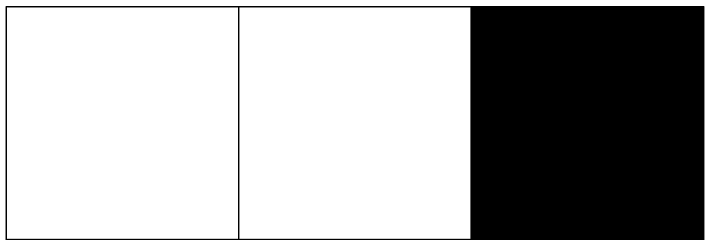
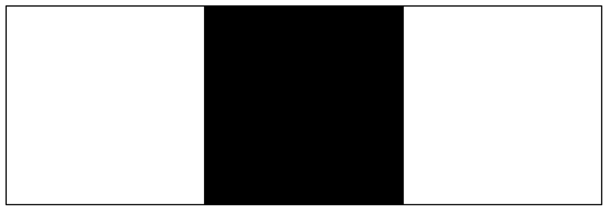
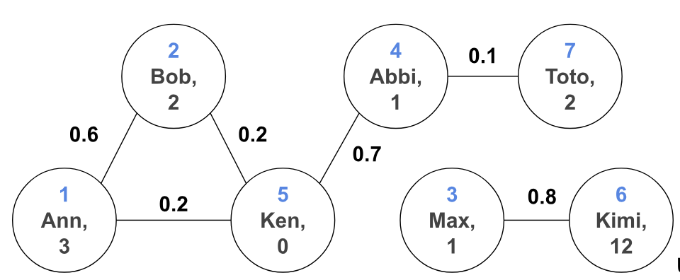

Dsa - Answers
- If we wanted a model to tell us whether there is a black dot in the black and white image with 3 pixels, and our training set is ([1, 1, 0], 1) (0 is black, 1 is white, label 1 means there is a black dot), what could an MLP model with no intermediate layers learn?
- If the first pixel is 0, then there is a black dot
- If the third pixel is 0, then there is a black dot
- If one of the pixels is black, then there is a black dot
- If the second pixel is 0, then there is a black dot
Training set:

Explanation: An MLP with ReLU activation function and given training set could learn that if third pixel is 0 then there is a black dot because this leads to training loss equal to 0 (classifies the training set correctly). While a model that can say "If one of the pixels is black, then there is a black dot" would also training loss equal to 0, an MLP with no intermediate layers cannot model the behavior "check one of is bla" because it is not equivalent to a linearly separable behavior (this article describes in more detail this problem).
- If we give the shifted image [1, 0, 1] to the model, will it predict that there is a dot or not?
(b) No

Explanation: the model will look at third pixel, see that it is bigger than 0 and say that there are no dots in the image.
- What are some problems of using MLP for images?
- MLPs have minimal assumptions built into the model
- Nowadays, image sizes are huge, meaning the input size is also big for the MLP
- Need to include shifted images in the training set for the model to generalize
- Nearby pixels are weighted equally to faraway pixels
Explanation: All of the above are true. As discussed in the lecture, MLPs have minimal inductive biases and an unrolled image can be 8 billion pixels. Moreover, as we saw in the previous two examples, we need to include shifted images in the training set so the model can recognize them as well. Finally, MLPs have no sense of locality, which means that pixels near a target object weigh just as much as the pixels further away.
- What are the inductive (assumptions built into the model) biases that we want an image-specific model to have?
- Faraway pixels should matter as much as the pixels close to the target object
- Shifting an object should not modify the output of the model
- Nearby pixels should matter more in recognizing the target object
- Shifts and translations of an object should make the model produce distinct results
Explanation: As discussed in problem 3, we want to be able to recognize shifted objects just as well as the original ones. We also want to capture spatial dependencies since the neighborhood of pixels has semantic meaning.
- For CNN, what layer is introduced into the architecture that was not present in MLP?
(b) Convolutions replace the linear layers for a part of the network.
Explanation: New type of layer being used for CNNs are convolutional layers. These layers typically replace the linear layers.
- In CNN, what object contains learnable parameters for convolution layers?
- Kernel.
- Filter.
- Stride.
- Padding.
Explanation: Main object containing the learnable parameters is filter or otherwise called kernel. Once the filters are known, we can apply them to the input image and get desired output.
- Apply the following filter [-1, 1] to image [0, 0, 2, 2, 4, 4, 2, 2, 0, 0] with a stride of 1 and no padding?
Answer: [0, 2, 0, 2, 0, -2, 0, -2, 0].
Explanation: Apply the convolution operation: \([(-1*0 + 1*0), (-1*0 + 1*2), (-1*2 + 1*2), (-1*2 + 1*4), (-1*4+1*4), (-1*4+1*2), (-1*2+1*2), (-1*2 +1*0), (-1*0+0*0)] = [0, 2, 0, 2, 0, -2, 0, -2, 0]\)
- What is the shape of your output?
Answer: 9.
Explanation: Shape of the output from a 1D image and 1D filter with stride 1 is W - F + 2P + 1 = 10 - 2 + 2*0 + 1 = 9 where W is size of the image, F is size of the filter, and P is size of the padding.
- What does the filter seem to do?
- Sum adjacent pixels
- Calculate difference between adjacent pixels
- Find pairs of pixels where the later value is bigger than the earlier value
- Find pairs of adjacent pixels where the right value is bigger than the left value
Explanation: Calculate difference between adjacent pixels because for any adjacent pixels \(p_1, p_2\), the convolution gives \(-1*p_1+1*p_2 = p_2 - p_1\). To actually output adjacent pixels where the right value is bigger than the left value we need to add a softmax layer and create an actual classifier.
- Apply the following filter [-1, 1] to image [0, 0, 2, 2, 4, 4, 2, 2, 0, 0] with stride of 1 and 1 layer of zero-padding?
Answer: [0, 0, 2, 0, 2, 0, -2, 0, -2, 0, 0].
Explanation: With a 1 layer of zero-padding the image becomes [0, 0, 0, 2, 2, 4, 4, 2, 2, 0, 0, 0]. Now, apply the convolution operation: \([(-1*0 + 1*0), (-1*0 + 1*0), (-1*0 + 1*2), (-1*2 + 1*2), (-1*2 + 1*4), (-1*4+1*4), (-1*4+1*2), (-1*2+1*2), (-1*2 +1*0), (-1*0+0*0), (-1*0 + 1*0)] = [0, 0, 2, 0, 2, 0, -2, 0, -2, 0, 0]\)
- What is the shape of your output?
Answer: 11.
Explanation: Shape of the output from a 1D image and 1D filter with stride 1 is W - F + 2P + 1 = 10 - 2 + 2*1 + 1 = 11 where W is size of the image, F is size of the filter, and P is size of the padding.
- How does this output differ from output of 7?
- Skip every second pixel
- Border pixels are no longer taken into account
- Border pixels are also taken into account
- No change
Explanation: Border pixels are also taken into account now because there is enough padding to include those pixels in the convolution operation twice.
- Apply the following filter [-1, 1] to image [0, 0, 2, 2, 4, 4, 2, 2, 0, 0] with stride of 2 and 1 layer of zero-padding?
Answer: [0, 2, 2, -2, -2, 0].
Explanation: With a 1 layer of zero-padding the image becomes [0, 0, 0, 2, 2, 4, 4, 2, 2, 0, 0, 0]. When a stride of 2 is applied, all we need to do is instead of moving to next pixel to convolve, move two pixels: \([(-1*0 + 1*0), (-1*0 + 1*2), (-1*2 + 1*4), (-1*4+1*2), (-1*2 +1*0), (-1*0 + 1*0)] = [0, 2, 2, -2, -2, 0]\)
- What is the shape of your output?
Answer: 6.
Explanation: Shape of the output from a 1D image and 1D filter is \(\lfloor \frac{W - F + 2P}{S} \rfloor + 1\) = \(\lfloor \frac{10 - 2 + 2*1}{2} \rfloor + 1\) = 6 where W is size of the image, F is size of the filter, P is size of the padding, and S is the size of the stride.
- How does this output differ from output of 10?
- Skip every second pixel
- Border pixels are no longer taken into account
- Border pixels are also taken into account
- No change
Explanation: Because the stride is bigger some of the pixel pairs are ignored (get skipped).
- Apply the following filter [-1, 0, 1] to image [[-1, 0, 1], [1, 2, 2], [1, 0, -1]] with a stride of 1 and no padding?
Answer: [[2], [1], [-2]]
Explanation: To apply a 1D filter onto a 2D image, we apply the filter on each row same as before: \([[-1*(-1) + 0*0 + 1*1], [-1*1 + 0*2 + 1*2], [-1*1 + 0*0 + 1*(-1)]] = [[2], [1], [-2]]\)
- What is the shape of your output?
Answer: 3x1.
Explanation: For a 2D image, each output dimension is calculated separately. IR - FR + 2P + 1 = 3 - 1 + 2 * 0 + 1 = 3; IC - FC + 2P + 1 = 3 - 3 + 2*0 + 1 = 1, IR and IC are image row and columns, FR and FC are filter row and columns, and P is padding size.
- What does the filter seem to do?
- Find pairs of pixels where the later value is bigger than the earlier value in each row
- Sum adjacent pixels in each row
- Find pairs of adjacent pixels where the right value is bigger than the left value in each row
- Calculate difference between adjacent pixels in each row
Explanation: Calculate difference between adjacent pixels in each row since we perform same operation just on each row now.
- Apply the following filter [-1, 0, 1] to image [[-1, 0, 1], [1, 2, 2], [1, 0, -1]] with a stride of 2 and 1 layer of zero-padding?
Answer: [[0, 0], [2, -2], [0, 0]].
Explanation: With a 1 layer of zero-padding the image becomes [[0, 0, 0, 0, 0], [0, -1, 0, 1, 0], [0, 1, 2, 2, 0], [0, 1, 0, -1, 0], [0, 0, 0, 0, 0]]. To apply a stride of 2 on a 2D image, we move 2 pixels right and when the edge is reached we move to pixels down: \([[(-1*0 + 0*0 + 1*0), (-1*0 + 0*0 + 1*0)], [(-1*0 + 0*1 + 1*2), (-1*2 + 0*2 + 1*0)], [(-1*0 + 0*0 + 1*0), (-1*0 + 0*0 + 1*0)]] = [[0, 0], [2, -2], [0, 0]]\)
- What is the shape of your output?
Answer: 3x2.
Explanation: For a 2D image, each output dimension is calculated separately. \(\lfloor \frac{IR - FR + 2P}{S} \rfloor + 1\) = \(\lfloor \frac{3 - 1 + 2*1}{2} \rfloor + 1\) = 3; \(\lfloor \frac{IC - FC + 2P}{S} \rfloor + 1\) = \(\lfloor \frac{3 - 3 + 2*1}{2} \rfloor + 1\) = 2, IR and IC are image row and columns, FR and FC are filter row and columns, S is stride size, and P is padding size.
- Apply the following filter [[1, 1, 1], [1, 1, 1], [-1, -1, -1]] to image [[1, 1, 1], [1, 1, 1], [-1, -1, -1]] with a stride of 1 and no padding?
Answer: [[9]].
Explanation: To apply convolution with a 2D filter, we need to perform element-wise multiplication and summation as before, but now instead of doing across a row, it is done across the rectangle: \(1*1 + 1*1 + 1*1 + 1*1 + 1*1 + 1*1 + (-1)*(-1) + (-1)*(-1) + (-1)*(-1) = 9\).
- What is the shape of your output?
Answer: 1x1.
Explanation: For a 2D image, each output dimension is calculated separately. \(IR - FR + 2P + 1\) = \(3 - 3 + 2*0 + 1\) = 1; \(IC - FC + 2P + 1\) = \(3 - 3 + 2*0 + 1\) = 1, IR and IC are image row and columns, FR and FC are filter row and columns, and P is padding size. As we can see, if image and filter are both 2D square, then only calculating one dimension is enough because both outputs are the same.
- Apply the following filter [[1, 1, 1], [0, 0, 0], [-1, -1, -1]] to image [[1, 1, 1], [1, 1, 1], [-1, -1, -1]] with a stride of 1 and no padding?
Answer: [[6]].
Explanation: To apply convolution with a 2D filter, we need to perform element-wise multiplication and summation as before, but now instead of doing across a row, it is done across the rectangle: \([[1*1 + 1*1 + 1*1 + 0*1 + 0*1 + 0*1 + (-1)*(-1) + (-1)*(-1) + (-1)*(-1)]] = [[6]]\).
Note: we got higher value in question 16 because the filter matched the pattern in the image. This type of filter selection is called pattern-matching and can be used to find specific patterns in images.
- Apply the following filter [[1, 1, 1], [0, 0, 0], [-1, -1, -1]] to image [[1, 1, 1], [1, 1, 1], [-1, -1, -1]] with a stride of 1 and 1 layer of zero-padding?
Answer: [[-2, -3, -2], [4, 6, 4], [2, 3, 2]].
Explanation: With a 1 layer of zero-padding the image becomes [[0, 0, 0, 0, 0], [0, 1, 1, 1, 0], [0, 1, 1, 1, 0], [0, -1, -1, -1, 0], [0, 0, 0, 0, 0]]. To apply convolution with a 2D filter, we need to perform element-wise multiplication and summation as before and slide the filter, but now instead of doing calculation across a row, it is done across the rectangle: $[ [10 + 10 + 10 + 00 + 01 + 01 + (-1)0 + (-1)1 + (-1)1, 10 + 10 + 10 + 01 + 01 + 01 + (-1)1 + (-1)1 + (-1)1, 10 + 10 + 10 + 01 + 01 + 00 + (-1)1 + (-1)1 + (-1)0] [10 + 11 + 11 + 00 + 01 + 01 + (-1)0 + (-1)(-1) + (-1)(-1), 11 + 11 + 11 + 01 + 01 + 01 + (-1)(-1) + (-1)(-1) + (-1)(-1), 11 + 11 + 10 + 01 + 01 + 00 + (-1)(-1) + (-1)(-1) + (-1)0] [10 + 11 + 11 + 00 + 0(-1) + 0(-1) + (-1)0 + (-1)0 + (-1)0, 11 + 11 + 11 + 0(-1) + 0(-1) + 0(-1) + (-1)0 + (-1)0 + (-1)0, 11 + 11 + 10 + 0(-1) + 0(-1) + 00 + (-1)0 + (-1)0 + (-1)*0] ] = [[-2, -3, -2][4, 6, 4][2, 3, 2]]$
- What is the shape of your output?
Answer: 3x3.
Explanation: As we said in problem 22, we only need to calculate one of the dimensions since both filter and image are square. W - F + 2P + 1 = 3 - 3 + 2*1 + 1 = 3 where W is width of the image, F is width of the filter, and P is size of the padding. So the output is 3x3.
- How is the output of 24 different from 23?
- Skip every second pixel
- Identifies both rows of 1's not only top one
- Border pixels are also taken into account
- No change
Explanation: By adding one layer of zero-padding, filter is able to identify both rows of 1's not only the top one as does question 23.
- How can convolution layers be integrated in CNN?
- Have alternating convolution and elementwise nonlinearity layers
- Have only convolution layers
- Always have only one convolution layer and use MLP for the rest
- Have alternating convolution and elementwise nonlinearity layers with additional linear and elementwise nonlinearity layers at the end of the network.
Explanation: The convolution layers can be integrated in a neural network by having alternating convolution and elementwise nonlinearity layers. This architecture and its modifications are usually used to get high level representation of an image that can be later used for different tasks. For example, by also adding linear and elementwise nonlinearity layers at the end of the network, we can specialize the network to classify whether the image has a car or not.
Note: In practice, we also introduce max pooling layers in between convolutions that help reduce the dimensionality, and add linear and elementwise nonlinearity layers at the end of the network for the final task.
- Match aspects of CNNs to inductive biases that they introduce. (a) Capture spatial dependencies (b) Handle translations (c) Compute efficiently
Explanation: The filters in convolutional layers help to capture spatial dependencies like pixel position's semantic meaning. Moreover, since a filter in a layer is shared across the whole image, we get weight-sharing which helps us train and run a model more efficiently for large images. Finally, pooling is a layer that is usually added in between convolution layers and helps to handle object translations (here is a nice article describing different types of pooling and what they achieve).

Undirected graph G.The first number is just a label for us. The first feature is the name of the user, and the second feature is how many times the user bought an item due to a friend's recommendation. Final edges have a feature specifying how close the two users are as friends (between 0 and 1, where 1 means very, very close friends).
- What are the vertices of G (report only labels)?
- 0
- 1
- 2
- 3
- 4
- 5
- 6
- 7
- 12
Explanation: To get the labels, we need to report the first number in each of the circles. So the vertices are {1, 2, 3, 4, 5, 6, 7}.
- What are the edges of G?
- (1, 2)
- (1, 5)
- (1, 3)
- (2, 5)
- (2, 6)
- (5, 4)
- (4, 7)
- (6, 3)
Explanation: Edges in a graph are reported by giving pairs of vertices that are directly connected by a line. So for us edges are {(1, 2), (1, 5), (2, 5), (5, 4), (4, 7), (6, 3)}.
- Who are Ann’s neighbors in G?
- 1
- 2
- 3
- 4
- 5
- 6
- 7
Explanation: To get the neighbors of a vertex, we need to report vertices that are directly connected by a line to the vertex. For Ann, those are Bob and Ken, so vertices {2, 5}.
- What are possible paths from Ann to Abbi?
- 5 -> 1 -> 4
- 4 -> 5 -> 1
- 1 -> 2 -> 5 -> 4
- 1 -> 5 -> 4
- None
Explanation: To get paths from one vertex to another, we need to report vertices such that first vertex is the "from" vertex, last vertex is the "to" vertex, and for any two consecutive vertices, second one is neighbor of the first one. In G, we can reach Abbi from Ann through Ken, then path is 1 -> 5 -> 4. Or by first going to Bob then Ken, so path is 1 -> 2 -> 5 -> 4.
- Is there a path from Ann to Kimi?
- 5 -> 1 -> 6
- 4 -> 5 -> 6
- 1 -> 2 -> 5 -> 6
- 1 -> 5 -> 6
- None
Explanation: There is no way to reach Kimi from Ann since Kimi is only neighbors with Max and Max is only neighbors with Kimi, so there is no connection to Ann or her neighbors.
- What are some problems of using MLP for graphs?
- Minimal inductive bias
- Faraway/unrelated vertices affect a vertex as much as close neighbors
- Takes into account relations between vertices for directed graphs
- Big networks (e.g., followers network on Instagram) lead to a big input size for MLP
Explanation: As discussed previously, MLPs have minimal built in assumptions about their inputs. Moreover, as we saw in problem 17, Kimi is unrelated to Ann, but MLPs would not be able to detect this, so Kimi would have just as much effect on Ann as her close friend Bob. Finally, big networks like social networks that can contains billions of people lead to big input size, so it is hard to train and use model efficiently.
- For GNN, what concept is introduced into the architecture that was not present in MLP?
- Message-passing
- GNNs are the same as MLPs
- Convolutions replace the linear layers
- None of the above
Explanation: To help vertices "communicate" with each other, concept of message-passing is introduced. Specifically, in every layer for each vertex, we calculate value from its neighbors and itself. This way, neighbors can "pass" information to their neighbors and those can pass that information to their neighbors etc.
Undirected graph G.
The first number is just a label for us. The first feature is the name of the user, and the second feature is how many times the user bought an item due to a friend's recommendation. Final edges have a feature specifying how close the two users are as friends (between 0 and 1, where 1 means very, very close friends).
- If the first layer is defined as \(h_i^1 = h_i^0 + \frac{1}{|N_i|} \sum_{j \in N_i} h_j^0 * e_{i, j}\) calculate output of the layer for Ann in graph G.
Hint: \(h_i^0\) is the feature how many times the user bought an item due to a friend's recommendation and \(e_{i,j}\) is the feature of the edge describing how close the two users are as friends.
Answer: 3.6
Explanation: Ann is node labeled 1. We established that Ann has two neighbors: Bob and Ken, so vertices {2, 5}. From the graph we can see that \(h_1^0 = 3, h_2^0 = 2, h_3^0 = 0\). Moreover, we can see friendship levels from the graph: \(e_{1,2} = 0.6, e_{1,5} = 0.2\). Plugging these in we get \(h_1^1 = h_1^0 + \frac{1}{|N_1|} \sum_{j \in N_1} h_j^0 * e_{1, j} = 3 + \farc{1}{2} (2*0.6 + 0*0.2) = 3.6\)
- Apply a nonlinear ReLU to your output.
Answer: 3.6
Explanation: ReLU(3.6) = max(0, 3.6) = 3.6.
- Did Abbi affect the output of the first layer?
(b) No.
Explanation: The only vertices that affected Ann are Bob and Ken's vertices since they are her direct neighbors.
- After how many layers can Abbi affect Ann?
Answer: 2.
Explanation: After the first layer, Abbi affects Ken, since Abbi is Ken's direct neighbor. After the second layer, Ken still affects Ann, but now Abbi also indirectly affects Ann because value from Abbi is included in Ken's value after first layer. So after 2 layers, Abbi indirectly affects Ann.
- At least how many layers do we need such that all vertices affect all other vertices that they have a path to?
Answer: 3.
Explanation: We can see that among vertices that can reach each other the furthest apart are Ann and Toto. Toto is 3 edges away from Ann, so only after 3 layers he can affect Ann's output. After first layer Toto is going to directly affect Abbi. From problem 23, Abbi can affect (indirectly) only after 2 layers, so in total Toto needs 3 layers to start (indirectly) affecting Ann.
Note: We need more layers if we want to far-away vertices to still have some effect, so GNNs may need a lot of layers for the receptive field to be high.
here is a nice detailed article if you would like to learn more about GNNs
- What are some problems of using MLP for sequences?
- MLP cannot deal with inputs of varying sizes out of the box
- Sequences can be very big, meaning the input size is also big for the MLP
- MLP lacks representation for ordered input
- All of the above
Explanation: MLPs expect a fixed size input. Since sequences can be of varying sizes this is a problem. Moreover, sequences can be very big, e.g., all Shakespeare books combined could be an input. Moreover, similarly to how there is no sense of locality for images in MLPs, there is also no sense of order (but order of sentences in a Shakespeare play matters).
- In RNN setting \(z_t = f_\theta(z_{t-1}, x_t)\), what is \(z_t\)?
- Hidden state
- Element in the input sequence
- Memory
- Element in the output sequence
Explanation: \(z_t\) is called the hidden state that tries to store information of all the inputs given so far, which is why it is also sometimes referred to as memory.
- In RNN setting \(z_t = f_\theta(z_{t-1}, x_t)\), what is \(x_t\)?
- Hidden state
- Element in the input sequence
- Memory
- Element in the output sequence
Explanation:\(x_t\) is the element in the input sequence. This is one of the main reasons why RNNs are preferred to MLPs: we do not have to feed the whole sequence into our model; instead, we can given one element from the input at a time.
- How many steps are needed to process one word at a time in the sentence “Inductive bias is an assumption about the relationship between input and output of a learning problem that is built into the model.”?
Answer: 22.
Explanation: there are 22 words in the sentence, so we need to make 22 steps and \(z_{22}\) will try to have the "summary/memory" of the whole sentence.
- What are the advantages and disadvantages of RNNs?
- Pro: Natural way to work with sequential data
- Con: Long-range dependencies get lost
- Con: Unstable and difficult to train
- Pro: Only need one term of a sequence at a time to do the computations
Explanation: Because we are processing only one element at a time in the given order, it is a natural way to work with sequential data. However, because we try to cram all of the information into one hidden state, we are more likely to lose information from earlier parts making the long-range dependencies get lost. Finally, in practice, RNNs are unstable and difficult to train.
- How does a transformer try to overcome the difficulties of RNNs?
- Use MLP instead of RNN
- A new module called attention
- Take into account all terms prior to the current one
- None of the above
Explanation: Instead of trying to compress all the information into one hidden state, transformers introduce a new module called attention (or modification of it called self-attention). This module takes into account all terms prior to the current one and decides how much "attention" to pay to each of those terms. This way important long-range dependencies do not get lost and the architecture is more stable and easier to train.
- What are the advantages of using specialized architectures?
- Can use less parameters than if was using MLP
- Can introduce useful inductive biases
- Can overfit to the specific data type
- None of the above
Explanation: As we have seen throughout the lecture, creating specialized architectures helps us introduce built in assumptions about input that an MLP would not know. Bu doing so, we can also use less parameters and do computations more efficiently.
- Given problem match to one of the architectures learned so far.
(a) Find whether there is a car in the image. (b) Given a molecule structure, decide whether it would have a pungent odor. (c) Given information about an apartment, predict the sale price. (d) Given changes in the price of the apartment for the last 2 years, predict the price in the future.
Explanation: First example, deals with images, so it's better to use CNNs. Second example, works with molecules. Usually, a lot of important information about molecules is stored in its structure which can be represented as a graph, so GNNs could be very useful. However, for smaller molecules MLP might be enough. Third example, is a typical MLP problem - there are no special inputs. Final example works with time-series, so sequential data. Therefore, RNNs or transformers would be a good choice.